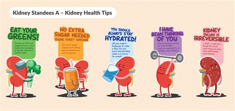
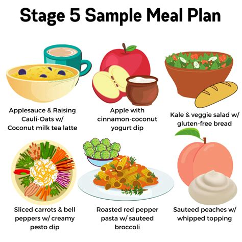

Kidney Awareness Community Events
Join our charity walks, free community health screenings, educational webinars, and nutrition workshops. Together we can raise vital funding and expand early kidney disease detection.
Upcoming Events
Mark your calendar and get involved in our community initiatives.

Annual Kidney Walk
Community 5K walk uniting families, donors, and survivors to raise vital research funds.

Free Screening Day
Complimentary eGFR blood tests, urine albumin checks, and on-site nephrology consults.

Donor Awareness
Expert-led seminar about living kidney donation, matching registries, and surgical safety.

Nutrition Workshop
Interactive cooking demo with renal dietitians preparing delicious, low-sodium meals.
Event Categories
Explore the different ways we serve patients and our community.
📢 Awareness Campaigns
Public education drives focusing on symptom recognition, blood pressure control, and risk awareness.
🎗️ Fundraising Events
Galas, walks, and auctions raising crucial funds for pediatric programs and patient financial aid.
🩺 Health Seminars
Nephrologist panels, medication management reviews, and novel therapy breakthrough discussions.
🤝 Community Engagement
Peer-to-peer dialysis support groups, volunteer opportunities, and caregiver assistance circles.
Past Event Highlights
A look back at the meaningful milestones achieved by our community.
2024 Health Fair
Screened over 500 attendees, identifying 15% with previously undetected early kidney risk factors.
Kidney Gala Benefit
Raised $150,000 to assist pediatric kidney transplant programs and provide family travel grants.
Dialysis Patient Day
Welcomed 200+ patients and caregivers for self-care workshops and vascular access care classes.
Youth School Program
Educated 1,200 high school students about biology, hydration, nutrition, and organ donation.